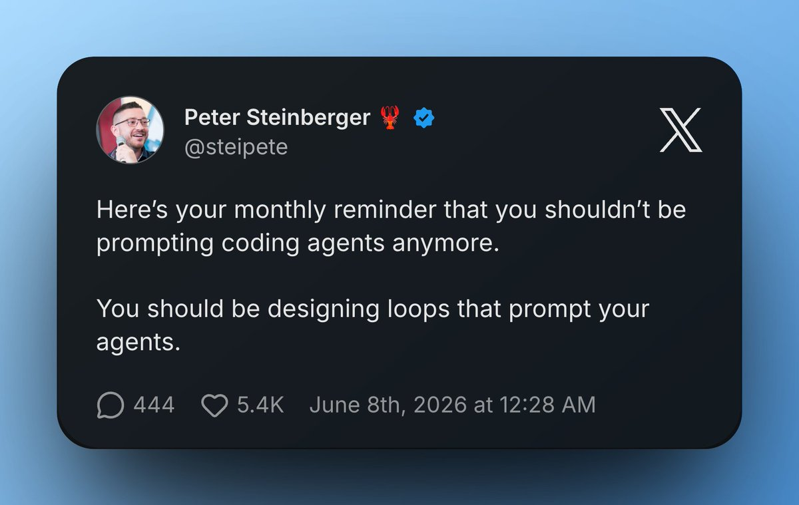
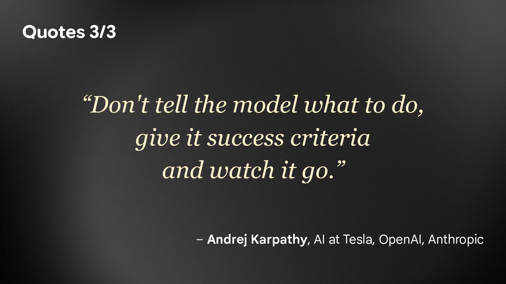

Would you let an agent fix your production spider at 3am, with nobody watching?
A redesign moves the class names. The page still has the data, the spider just can't find it. An agent can read the new markup and fix that.
The HTML arrives empty. Often the data is already in the page as inline JSON, so the fix is parsing that, not a browser. Sometimes you need a browser.
A bot wall sends a challenge page, not the markup. No selector heals that. Fix access first, for example with Zyte API.
7 heals of the same break, Claude Opus 5.5, 28–29 Sep 2026. Tonight is one more sample, not the average.
opts=(--permission-mode bypassPermissions \
--tools "${TOOLS// /,}" --strict-mcp-config)
[ -n "$MODEL" ] && opts+=(--model "$MODEL")
[ -n "$EFFORT" ] && opts+=(--effort "$EFFORT")
"$CLAUDE" -p "$prompt" --output-format stream-json \
--verbose "${opts[@]}"<article class="product_pod"> <h3 class="title">A Light in the Attic</h3> <p class="price_color">£51.77</p> <p class="instock availability">In stock</p> </article>
def parse(self, response):
for book in response.css("article.product_pod"):
price = book.css("p.price_color::text").get()
yield {
"title": book.css("h3.title::text").get(),
"price": float(price.strip("£")) if price else None,
"availability": book.css("p.availability::text").get(),
}Four checks. The last one is an answer key: 3 books checked by hand.
<h2 class="book-card__name">A Light in the Attic</h2> <s class="price price--was">£64.71</s> <span class="price price--now">£51.77</span> <span class="book-card__stock" data-stock="in">
'item_scraped_count': 10, {"title":null,"price":null,"availability":null} ✓ item count ✗ fields present – values sane (skipped: every value is empty) ✗ golden sample
"10 items scraped", no error. Every field is empty. Note the struck-through £64.71, it matters later.
TOOLS="Read Grep Glob" # the only tools it gets # TOOLS="$TOOLS Bash" # run the crawl and the checks, write books.py uncomment line 15, save, run it again TOOLS="$TOOLS Bash"
Read, Grep, Glob escalated 3 of 3 $0.11–0.24 + Bash healed 3 of 3 $0.07–0.12 attempt 1, 26–31s
An allowlist: read, search, a shell. No web, no MCP servers, no subagents.
7 heals with a shell, 28–29 Sep 2026, Claude Opus 5.5. heal.sh re-ran the crawl and the checks itself: in 0 of 3 heals did the agent run them.
Titles, prices, stock, all there, all plausible. The kind of fix a rushed human or a weaker agent writes.
| Check | What it asks | Wrong fix |
|---|---|---|
| Item count | Did we get 10 books? | ✓ passes |
| Fields present | Is every field filled in? | ✓ passes |
| Values sane | Is the price a number between 1 and 200? £64.71 is. | ✓ passes |
| Golden sample | Is A Light in the Attic actually £51.77? | ✗ got £64.71 |
It took the struck-through old price. Every price is 25% too high. Check values, not presence.
Then measure it. Swap the model and you swap the agent: re-run your numbers after every change.
Say what correct data is and that it may give up. "Make the check pass" invites a fake.
Give it the command that proves the fix. In 3 of 3 heals it never ran it: the script's re-check did the proving.
An attempt cap and a budget. The heal with no tools still cost $0.11–0.24 and fixed nothing.
Two attempts, then a human. In every failed run here, the agent's own message named the cause.
Read, search and a shell. No web, no MCP servers, no subagents.
We denied Bash, Edit and Write. In 1 of 5 runs it found Monitor through ToolSearch and wrote books.py with that.
Headless still loads your setup: it saw this laptop's MCP servers until --strict-mcp-config. Rehearse from /tmp.
The prompt is one box. What makes it safe is everything around it.


A million items a day, a crawl that runs for hours. Demo 1 waited for the crawl to finish. Here the end is too late.
Every page after the break is downloaded, paid for in proxies and bandwidth, and stored broken.
The data arrives late or not at all. Someone has to notice, at 3am, and decide.
A restart at hour 3 re-fetches 3 hours of pages, warms up again, and spends request budget the site may not give twice.
Option 4: pause it, fix it, carry on.
Spidermon already checks a crawl while it runs. What was missing is a way for an agent to look inside it.
# look at a page the crawl already downloaded r = list(crawler.recent_responses)[-1] print(r.url) print(r.css("div.product_main p").getall()) # after its edit: try the fixed page object on all of them m = load_page_objects() for r in list(crawler.recent_responses): resp = HttpResponse(r.url, r.body, ...) p = m.BooksToscrapeProductPage(response=resp) print(p.name, p.price, p.currency, p.availability)
recent_responses is ours, kept by base/quality.py.We can't redesign someone else's site, so we break our own selector. Staged, and we say so. Plain make run has no agent: it scrapes 200 books with no price, and the sad trombone plays.
SPIDERMON_ENABLED = True
SPIDERMON_PERIODIC_MONITORS = (
{"base.quality.Tripwire": 0.5}
if os.environ.get("HEAL_ENABLED", "1") == "1"
else {}
)
class Tripwire(MonitorSuite):
monitors = [LiveQuality]
monitors_failed_actions = [
PauseForHealing]
# 0.5 = seconds between checksMCP_TOOLS = [
"list_jobs", "status",
"execute", "inspection_reference"]
cmd = [CLAUDE, "-p", prompt, ...
"--tools", "Read,Edit",
"--mcp-config", str(mcp_config),
"--strict-mcp-config",
...
"--allowedTools", " ".join(
f"mcp__scrapy__{t}" for t in MCP_TOOLS)]
# no Bash, no Write, no other MCP serverThe last 10 product pages are still in memory as `crawler.recent_responses`: test your fixed selectors against them. Then fix base/pages/books_toscrape_com.py. Only edit that file. ... Do not pause, unpause, stop or change the running crawl, and do not send new requests. You cannot run shell commands. When you finish, the harness runs the fixture tests (uv run pytest tests -q) and, if they pass, loads your fixed page objects into the live crawl and resumes it.
- raw = self.css("div.product_main p.price-now::text").get() + raw = self.css("div.product_main p.price_color::text").get()
Broken/restarts: 9 runs, 3 each on Haiku, Sonnet, Opus. Cost: 8 runs on Sonnet. 1 Oct 2026. The broken books were already downloading when Spidermon paused.
A tripwire that counts every item so far re-paused the crawl right after a fix. The broken books were still in the total.
Haiku re-imported the page-object module inside the crawl. Tests passed, the crawl stayed broken. Now the fix goes onto the classes the crawl really uses.
Swap one field on a page object, not the spider. The MCP's own docs call patching a running spider "a separate, riskier mode".
Fixture tests saved with scrapy savefixture are the answer key. The agent can't run them, the script does.
Pause, unpause and load belong to the script. The agent may read the crawl and edit one file.
If the gate still fails, the crawl stops and ESCALATION.md lists every attempt.
| Model | Healed on attempt 1 | Cost per heal | Agent time |
|---|---|---|---|
| Haiku | 3 of 3 | $0.06–0.08 | 37–50s |
| Sonnet | 3 of 3 | $0.07–0.09 | 15–18s |
| Opus | 3 of 3 | $0.12–0.14 | 22–31s |
3 runs each, 1 Oct 2026, same break, advisor off. All three fixed it. What differs is time and money. A different model is a different agent: re-measure before you switch.